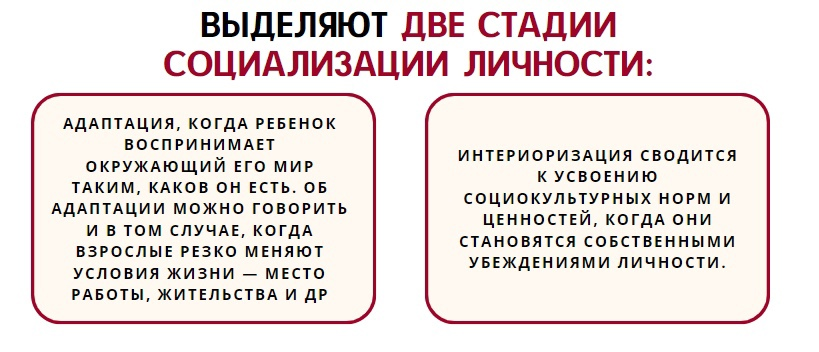
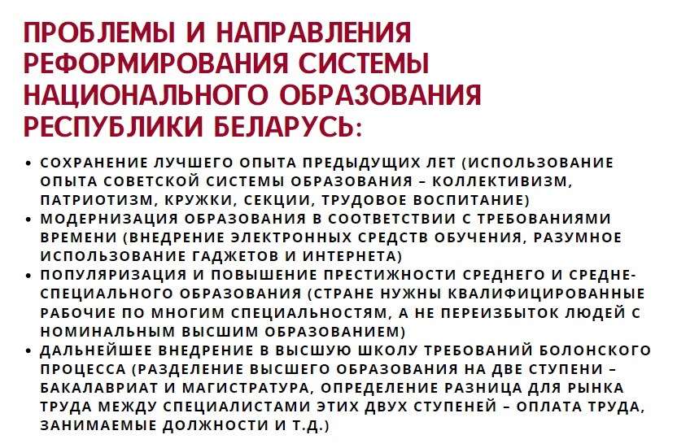
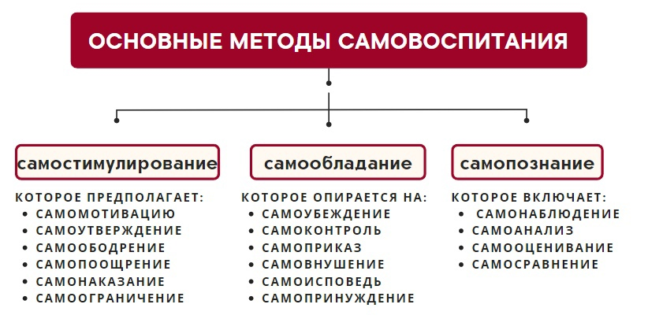
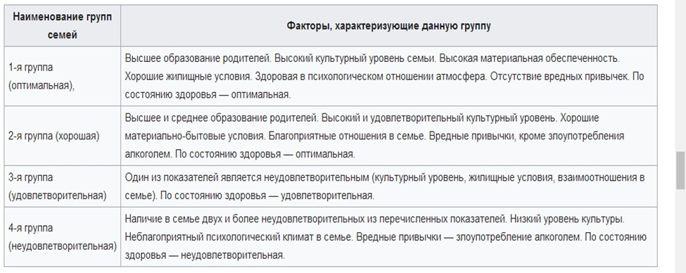

45.Образование как механизм социализации личности. Проблемы и направления реформирования системы национального образования Республики Беларусь
Основная функция образования – передавать ценности господствующей культуры. Образовательные учреждения выполняют функцию социализации. Образовательные учреждения являются также и средством социального контроля. Образование выполняет также и стратификационную функцию: распределяет людей по социальным статусам в соответствии с их достоинствами и способностями.
- учебно-воспитательные учреждения как социальные организации
- социальные общности (педагоги и учащиеся)
- учебный процесс как вид социокультурной деятельности
Важнейшая роль принадлежит системе дошкольного воспитания: основы воспитанности человека, его трудолюбия, многие другие нравственные качества закладываются еще в раннем детстве дошкольным образованием. В начальной школе детей обучают более сложным познавательным навыкам, упор делается на усвоение знаний общего характера. В системе среднего образования главное внимание уделяется более специальным знаниям, в том числе и начальным знаниям и навыкам профессионального обучения. На уровне высшего образования делается упор на изучение точных и гуманитарных наук, технических дисциплин.
В большинстве стран мира среднее образование считается обязательным. Дети находятся под присмотром в классе и за его пределами – на спортивных площадках и во время других организованных внешкольных занятий. Почти весь день их поведение контролируется учителями и другими представителями школьных властей.
Образовательные учреждения способствуют созданию равных возможностей и благоприятных условий для восходящей мобильности, поскольку в них людей оценивают по их достижениям независимо от классовой принадлежности, расы и пола. Образование способствует развитию демократии, поскольку ослабляет предрассудки по отношению к группам меньшинств. Благодаря обучению воспитываются хорошо осведомленные граждане.
«Теория человеческого капитала»: образование – это капиталовложение в будущее людей. Люди начинают жизнь, обладая некоторым объемом потенциального капитала – природных способностей. Этот капитал увеличивается в раннем детстве, в школьные годы и в начале трудовой деятельности, но капитал теряет покупательную силу или совсем обесценивается, если их знания и профессиональная подготовка не соответствуют современным требованиям.
Понятием «социализация» обозначают процесс освоения индивидом социальных норм и культурных ценностей общества, являющихся неотъемлемым условием его включения в социально-культурную среду. Данный процесс идет на протяжении всей жизни человека. Процесс социализации обеспечивает непрерывное производство и воспроизводство общественной жизни. В результате социализации происходит активное вовлечение индивида в деятельность различных социальных групп.
В результате социализации происходит приобретение индивидом социального «Я», он становится личностью с характерными для нее ценностями, убеждениями и т.д. Социализация не ограничивается рамками семьи, она пролегает и через другие малые группы и социальные институты: сверстники, школа, армия, вуз и др. Таким образом, социализацию личности можно свести к усвоению ценностно-нормативных установок. Этот механизм включает: деятельность (игровую, учебную, профессиональную); общение (взаимодействие с окружающими людьми); развитие самосознания.
В результате функционирования данного механизма происходит формирование индивидуальности, социальная самоидентификация личности, т.е. личность начинает осмысливать свою социальную принадлежность, социальные роли, формирует самооценку и т.д.
46. Развитие, обучение и воспитание личности
Объективные и субъективные факторы развития личности. Развитие личности есть сложный и многосторонний процесс. Причина сложности заключается в большом количестве механизмов воздействия на личность путем ее образования и воспитания и невозможности при этом полностью предугадать результат. Однако, можно выделить факторы, которые обуславливают ход и эффективность воспитательного процесса – т.н. объективные и субъективные факторы развития личности.
Объективные факторы – это такие причины, которые не зависят от личности (место рождения, социальная среда, природа и климат, традиции и господствующие в обществе нормы и т.д.). Данные факторы предопределяют такие характеристики индивида, как национальность, раса, религиозная принадлежность, социальный класс и т.д.
Субъективные факторы – это причины, зависящие от самого воспитанника и его наставников, а также от окружающих людей и деятельности учебно-воспитательных учреждений (склонность ученика к воспитанию и его умение воспринимать воспитательное влияние – послушание, сила воли, заинтересованность, направленность воспитанника – стремления, желания и намерения индивида, личностные интересы, духовная связь между воспитанником и наставником, авторитет учителя, воспитательная система, методы и приемы воздействия (как учить), непосредственная деятельность наставников (кто учит), педагогические программы воспитания (чему учить), морально-психологический климат и настроение в учебной группе, коллективе).
Образование и воспитание личности. Самовоспитание и самообразование.
Образование личности – процесс передачи индивиду знаний, умений и навыков, представляющих актуальную для данного общества научно-ориентированную информацию об окружающем мире и способах жизнедеятельности в нем.
Воспитание личности – более широкое понятие, характеризующее совокупность подходов, приемов и методов погружения индивида в ценности и нормы культуры данного общества.
Образование и воспитание внутренне взаимосвязаны и обуславливают друг друга. В тоже время они не тождественны (например, образованный, но не воспитанный человек; реже – воспитанный, но невежественный человек. т.к. образование является частью воспитания, содержательно входит в него).
Самовоспитание – относительно позднее свойство онтогенеза индивида, связанное с достижением необходимого уровня самосознания, критического мышления, способности и готовности к самоопределению, самовыражению, самоактуализации, самосовершенствованию. Самовоспитание – это деятельность человека, направленная на изменение своей личности в соответствии с сознательно поставленными целями, которое характеризуют самостоятельность и зрелость человека.
Воспитание невозможно (если речь не идет о чистом насилии) без самовоспитания (!). «Нельзя научить, можно лишь научиться» В.Э.Мейерхольд.
Самообразование – процесс самостоятельного (независимого, автономного) получения индивидом знаний, необходимых для выполнения определенных видов профессиональной деятельности.
47. Роль и функции семьи в социализации личности.
- добровольность вступления в брак;
- члены семьи связаны общностью быта;
- вступление в брачные отношения;
- стремлением к рождению, социализации и воспитанию детей.
Семья принадлежит к важнейшим общественным ценностям. Согласно некоторым научным теориям, именно форма семьи могла на протяжении многих веков определять общее направление эволюции макросоциальных систем. Каждый член общества, помимо социального статуса, этнической принадлежности, имущественного и материального положения, с момента рождения и до конца жизни обладает такой характеристикой, как семейно-брачное состояние.
На стадиях жизненного цикла человека последовательно меняются его функции и статус в семье. Для человека семья является источником удовлетворения ряда его потребностей и малым коллективом, предъявляющим ему разнообразные и достаточно сложные требования. Для ребёнка семья – это среда, в которой складываются условия его физического, психического, эмоционального и интеллектуального развития.
Содержание понятия «семья» трансформируется вслед за социокультурным изменением общества. Под семьёй сегодня может пониматься пара без детей или один родитель как минимум с одним ребёнком, а также легализованные в ряде стран однополые союзы.
Исследования указывает на признаки кризиса современной семьи, связанные с деградацией традиционных ценностей культуры, появлением феномена «чайлдфри» (англ. childfree – свободный от детей, добровольно бездетный), однополых браков и т.д.
48. Творческий потенциал личности и механизмы его развития: образование и самообразование
Любой человек «заряжен» на творчество, которое выступает способом самореализации индивида, инструментом его самопознания, развития его внутреннего мира и даже средством общения с другим людьми. Что движет творческими людьми? Вопрос непростой. В первую очередь следует назвать потребность в самовыражении, далее желание обратиться с помощью своего творчества к другим людям, быть положительно оцененным ими, обрести известность, а возможно и желание повысить свою самооценку. Творчество – это способ личности представить миру себя в своих лучших проявлениях, показать свои уникальные умения. мастерство, талант.
Исследование творчества в философии занимается отдельный подраздел – эвристика – теория творчества.
Раскрытие творческого потенциала личности непростой процесс, связанный и с психологией и с педагогикой. Раскроет человек в себе свои задатки и способности или нет во многом зависит как от родителей, так и от педагогов-преподавателей, от друзей (класса, группы) и социального окружения человека, их дружественности и поддержки начинаний индивида. а также от самого человека, способного отстоять свою точку зрения на любимое дело и продемонстрировать (подтвердить) своим трудом свой талант и умения.
- как совокупность знаний и опыта, ценных личностно-профессиональных качеств, обеспечивающих мотивированную способность и готовность специалиста (выпускника ссуза, вуза) эффективно решать разнообразные социально-личностные и профессиональные задачи;
- как социально-профессиональную компетентность специалиста (выпускника ссуза, вуза), которая представляет собой сложное, обобщенное личностное качество, выражающее способность мотивированно и ответственно применять сформированные компетенции для эффективного решения разнообразных социально-профессиональных задач.
- недостаточное соответствие качества человеческого капитала (нехватка знаний и опыта, способностей, мотивации и активности работников) требованиям новой экономики, основанной на знаниях, и решению глобальных проблем человечества (энергетических, экологических, климатических, экономических, социальных и др.).
- повышенная востребованность в условиях новой экономики не только профессиональных компетенций работников, но и их духовно-нравственных личностных качеств (важно быть не только профи, но и адекватным порядочным человеком).
- неограниченность и неисчерпаемость человеческого капитала (в отличие, например, от природных ресурсов ресурсы интеллекта человека можно развивать и использовать очень долго и плодотворно).
Именно в силу последней причины часто можно услышать, что главный ресурс Беларуси это люди. Эта идея имеет конкретные практические основания и не является иллюзорной идеализацией. Показателен в этой связи пример Японии, не имеющей своих богатых природных ресурсов и расположенной на скромной территории, не характеризующейся выгодным экономико-географическим положением. Эта страна сумела сделать ставку на развитие человеческого капитала и стать одной из лидирующих стран мира по уровню своего общего развития в различных сферах жизни (экономика, наука, техника, технологии, культура и т.д.).